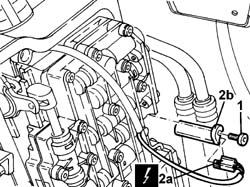
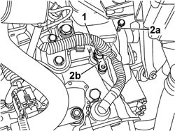

2135B72 ELECTRONIC AUTOMATIC GEARBOX INPUT RPM SENSOR - R.R.
- Path
- Procedures > 21 GEARBOX > 2135 automatic transmission external controls > 2135B automatic transmission electrical controls > 2135B72 ELECTRONIC AUTOMATIC GEARBOX INPUT RPM SENSOR - R.R.
- Kind
- repair procedure (removal / refitting; the operation number is the code)
- Applies to
- engines: 2.4 20V, 3.0 V6, 3.2 V6; all production periods
- Interactive page
- https://sloeber94.github.io/elrnDB-lThss/en/#/209673
Applies to: engines: 3.0 V6, 3.2 V6; all production periods
 Removing
Removing
 Refitting
Refitting- Position the vehicle on a lift.
See in Op. 5530B10 BATTERY - R.R.
- Make sure that the ignition key is in the OFF position, then disconnect the negative battery terminal.
See in Op. 7040D50 ENGINE COMPARTMENT UPPER SOUND INSULATION SHIELD - R.R.
See in Op. 7055B54 PROTECTION/GUARD under engine - R.R.
See in Op. 1048A28 vacuum air circuit resonator pipe - r+r
- [PR2130B38]
- [PR7055B39]
- [PR1048A34]
1. Undo the bolt and remove the electronic automatic transmission input rpm sensor from its housing.
2. Disconnect the electrical connection (2a) and remove the electronic automatic transmission input rpm sensor (2b).

Applies to: engines: 3.0 V6, 3.2 V6; all production periods
Refitting
Removing- Place the electronic automatic transmission input rpm sensor back in its housing and tighten it to the recommended torque.
 | Value - daNm | Fastening | Component | Ø |
|---|---|---|---|---|
. | - | Bolt | AUTOMATIC GEARBOX INPUT RPM SENSOR ELECTR. | - |
- Connect the electrical connection to the electronic automatic transmission input rpm sensor.
- [PR1048A34]
- [PR7055B39]
- [PR2130B38]
See in Op. 1048A28 vacuum air circuit resonator pipe - r+r
See in Op. 7055B54 PROTECTION/GUARD under engine - R.R.
See in Op. 7040D50 ENGINE COMPARTMENT UPPER SOUND INSULATION SHIELD - R.R.
- Connect the negative battery terminal.
- Remove the vehicle from the lift.
Applies to: engines: 2.4 20V; all production periods
Removing
Refitting- Position the vehicle on a lift.
- Make sure that the ignition key is in the OFF position, then open the boot, remove the cover on the left hand side and disconnect the negative battery lead.
See in Op. 7040D50 ENGINE COMPARTMENT UPPER SOUND INSULATION SHIELD - R.R.
See in Op. 1048A21 AIR INLET HOSE FROM INTAKE TO FILTER - R.R.
See in Op. 1048A28 vacuum air circuit resonator pipe - r+r
1. Disconnect the electrical connection from the electronic automatic transmission input rpm sensor.
 | Description | Connector |
|---|---|---|
1 | Rpm sensor | K046 |
2. Undo the bolt (2a) and remove the automatic transmission input rpm sensor (2b).

Applies to: engines: 2.4 20V; all production periods
Refitting
Removing- Place the electronic automatic transmission input rpm sensor back in its housing and tighten it to the recommended torque.
| Value - daNm | Fastening | Component | Ø |
|---|---|---|---|---|
. | - | Bolt | AUTOMATIC GEARBOX INPUT RPM SENSOR ELECTR. | - |
- Connect the electrical connection to the electronic automatic transmission input rpm sensor.
| Description | Connector |
|---|---|---|
. | Rpm sensor | K046 |
See in Op. 1048A28 vacuum air circuit resonator pipe - r+r
See in Op. 1048A21 AIR INLET HOSE FROM INTAKE TO FILTER - R.R.
See in Op. 7040D50 ENGINE COMPARTMENT UPPER SOUND INSULATION SHIELD - R.R.
- Connect the negative battery lead, then close the boot.
- Remove the vehicle from the lift.
Topics linked from this page (5)
- 1048A21 AIR INLET HOSE FROM INTAKE TO FILTER - R.R.
- 1048A28 vacuum air circuit resonator pipe - r+r
- 5530B10 BATTERY - R.R.
- 7040D50 ENGINE COMPARTMENT UPPER SOUND INSULATION SHIELD - R.R.
- 7055B54 PROTECTION/GUARD under engine - R.R.